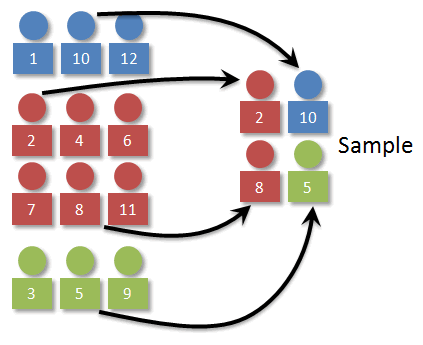

This is the second part in the series "End-to-end Machine Learning Porject with R". To see the first part of this series, click here.This tutorial covers cleaning and preparing data for machine learning algorithms
This example uses the classic 1990 California Housing dataset and follows the instruction from O'Reily's "Hands-on machine Learning with Scikit-learn and Tensorflow", albeit in R code.
Here comes the bad news: you will spend most of your time, not building models and making cool projections, but cleaning data for machine learning algorithms. Most of the datasets you have will be very messy, with missing value, typos, wrong data types, etc.... Some may not even have the attributes you are looking for. The job of a data scientist is to recognize these issues and rectify them to build useful, repreduciable and scalable model.
Fortunately, our dataset was relatively clean to deal with. We already saw several issues:
I've briefly discussed the issue with the first three problems, what about the fourth? With a few exceptions, most Machine Learning algorithms don't perform very well when the input data have vastly different scales. We can see it right in our data: the total number of rooms range from 6 to 39,320 while median income ranges from 0 to 15. Thus, we usually scale them by a method called standardization to minimize the effect scale may have on our algorithms.
In general, depending on the nature of the dataset, We may need to do several steps:
There are several ways we can deal with missing data, we can either:
# Method 1: delete the column
cal_housing <- subset(cal_housing, select = -c(total_bedroom)) or:
# Method 2: remove the missing NA
cal_housing_1 <- cal_housing[complete.cases(cal_housing),]
dim (cal_housing_1)
# [1] 20433 10
# we see that 207 rows with misssing values have been removedor:
# Method 3: impute missing NAs with median
cal_housing$total_bedrooms[is.na(cal_housing$total_bedrooms)] <- median(cal_housing$total_bedrooms, na.rm=TRUE)
summary(cal_housing$total_bedrooms)
#Min. 1st Qu. Median Mean 3rd Qu. Max.
# 1.0 297.0 435.0 536.8 643.2 6445.0 In option 3, we can see that I compute the median value on the dataset and impute the missing value of by this median. You can also use other value to impute the missing values, e.g: mean, but usually median is chosen as a good representation of the variables. The nice thing about this option is that you do not have to remove any data entries, which could be valuable in a small dataset. Let's stick with this method in this project
That's one task out of the way! We still need to remove the entries whose median_house_value exceeds $500,000, create some new useful (hopefully) variables, making sure that our categorical variables are in factor form, and perform feature scaling.
A very useful tools that can be used for these tasks are dplyr with piping techniques. Again, without going too much into the details, here is how the entire data transforming pipeline is effectively and succintly coded using dplyr. Here, you can see that I have:
library(dplyr)
cal_housing <- cal_housing %>%
filter(median_house_value < 500000) %>%
mutate(rooms_per_house = total_rooms / households) %>%
mutate(population_per_house = population / households) %>%
mutate(ocean_proximity = as.factor(ocean_proximity)) %>%
mutate_at(vars(-ocean_proximity, -median_house_value, -median_income), funs(scale)) %>%
data.matrix %>% data.frame It may sound strange at first to split our dataset. I mean: if we want our algorithms to be as 'smart' as possible, wouldn't we want to feed it with as much information as possible? This is true, however, usually, we don't have a fix algorithm we want to fit to begin with. We want to try different models and see which one performs the best. You will see how I compare the performance of three different Machine Learning Algorithms in this example. The test set allows you to compare different models in an unbiased way, by basing your comparisons in data that were not use in any part of your training/hyperparameter selection process.
Creating test set is very simple: just pick some instances randomly, usually 20% of the dataset (Ok, 10% is fine) and set them aside:
set.seed(365)
train_id <- sample(nrow(cal_housing), size = 0.8*nrow(cal_housing))
train_set <- cal_housing[train_id,]
test_set <- cal_housing[-train_id,]
print (paste(nrow(train_set), "train +", nrow(test_set), "test"))
# [1] "15718 train + 3930 test" This purely random sampling method is generally fine if we have a large dataset, but if it is not, you run the risk of introducing significant sampling bias. You can read more about it here. In short, it is the phenomenon when the sample is not represetative of the actual population. We want to guarantee that the test set is representative of the population. This is called stratified sampling.
Plots of median income as a continous and categorical variable. Image source: Elgin Community College
What does it mean for our dataset? Let's say that we think median income is a very important attribute to predict median housing prices. We want to ensure that the test set is representatiuve of the various categories of incomes in the whole dataset (that mean, we should have the same representation of the 0.1%, 1%, 10% richest - Ok, we are not going into that much details though). Since our median income is continuous variable, we have to convert them into categorical variables of different levels (I choose 5 levels of income) and perform stratified sampling to create the test set. This can be easily done with the caret package in R.
#Convert median income into categorical variables with 5 levels
cal_housing <- cal_housing %>%
mutate(income_level = ceiling(median_income/2)) %>%
mutate(income_level = factor(ifelse(income_level >= 5, 5, income_level))) %>%
select(-median_income)
plot(cal_housing$income_level) Plots of median income as a continous and categorical variable
#Stratified Sampling
library (caret)
train_str_id <- createDataPartition(cal_housing$income_level, p =.8,
list = FALSE, times = 1)
train_str <- cal_housing[train_str_id,]
test_str <- cal_housing[-train_str_id,]We can compare the performance of stratified sampling and random sampling by seeing how well each method represents the distribution of income level in the overall data set ('overall' column):
| Income level | Overall proportion | str_sampling proportion | normal_sampling proportion | str_sampling error(%) | normal_sampling error(%) |
|---|---|---|---|---|---|
| 1 | 0.12413477 | 0.12401324 | 0.12391858 | -0.09790192 | -0.1741631 |
| 2 | 0.50819422 | 0.50853069 | 0.49898219 | 0.06620830 | -1.8126987 |
| 3 | 0.28104642 | 0.28113063 | 0.28651399 | 0.02996556 | 1.9454359 |
| 4 | 0.07395155 | 0.07384772 | 0.07811705 | -0.14039777 | 5.6327437 |
| 5 | 0.01267305 | 0.01247772 | 0.01246819 | -1.54128099 | -1.6164403 |
The table compares the income category proportions in the overall dataset, in the test set generated with stratified sampling and in a test set generated by random sampling. We can see that the stratified sampling generated test set has income category proportions almost identical to those of the dataset, compared to the skewedness of the test set generated by random sampling.
Wow, that was a lot of work, and we have not even started applying and evaluating our models yet. Remember that I said Data Cleaning and Preparing usually accounts for 70-80% of the amount of work. This is usually not the most exciting part of each data science project. However, in order to effectively apply different models, it's crucial that the dataset under consideration is treated carefully and appropriately. The good news is: now that we have cleaned our dataset, we are ready for the most exciting parts: applying and evaluating machine learning model. That's the topic for part 3 of the series.
The entire Python script for this project can be found at my Github page.